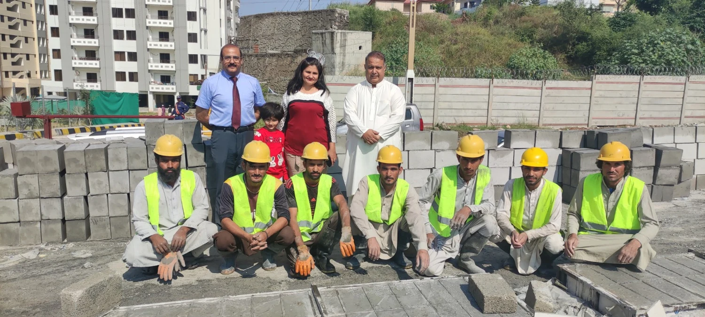

Careers
Build the equipment. Run the plant. Explore our manufacturing role profiles.
12 roles
Plant engineeringAutomation & Control Engineer — CLC Production Plants
Role profile for manufacturing recruitment. Location and vacancy availability are confirmed by the team.
Develop and commission controls for batching, mixing, pumping and foaming equipment.
Responsibilities
- Program PLC sequences, interlocks, alarms and HMI screens for automated CLC production.
- Integrate load cells, level sensors, flow meters, motors and variable-frequency drives.
- Prepare I/O lists, control-panel drawings, test procedures and operator instructions.
- Troubleshoot plant faults and support commissioning alongside fabrication and production teams.
Qualifications
Electrical, electronics or mechatronics degree; a relevant technical diploma with strong commissioning experience is also suitable.
Experience
3+ years in industrial automation; hands-on PLC commissioning is essential.
Practical skills
- PLC logic and HMI development
- Motor control, instrumentation and electrical schematic reading
- Safe isolation, fault finding and commissioning documentation
Software & equipment
- Siemens TIA Portal / WinCC or equivalent PLC/HMI platform
- AutoCAD Electrical or EPLAN
- VFD configuration and industrial communications such as Modbus
Plant engineeringMechanical Design Engineer — Mixing & Batching Equipment
Role profile for manufacturing recruitment. Location and vacancy availability are confirmed by the team.
Design manufacturable mixers, frames, tanks, conveyors and plant assemblies.
Responsibilities
- Create fabrication drawings, assemblies and bills of materials.
- Select motors, gearboxes, bearings and drive components for mixing equipment.
- Check clearances, maintenance access, weld details and fabrication tolerances.
- Work with the workshop to resolve fit-up issues and update drawings after trials.
Qualifications
Mechanical engineering degree or mechanical design diploma with an equipment-design portfolio.
Experience
3+ years designing fabricated industrial machinery.
Practical skills
- 3D assemblies and production drawings
- Steel fabrication, shaft and bearing selection
- BOM preparation and design revision control
Software & equipment
- SolidWorks or Autodesk Inventor
- AutoCAD
- Excel for calculations and BOMs
Workshop & fabricationMIG / MAG Welder — Plant Frames & Assemblies
Role profile for manufacturing recruitment. Location and vacancy availability are confirmed by the team.
Fabricate welded steel structures and assemblies for Nanolite production equipment.
Responsibilities
- Read fabrication drawings and prepare steel joints.
- Set welding parameters and produce consistent MIG/MAG welds.
- Control distortion, inspect finished welds and correct defects.
- Maintain welding equipment and follow workshop PPE and hot-work procedures.
Qualifications
Welding trade certificate preferred; practical experience and a successful welding test can substitute. A high-school diploma is not mandatory.
Experience
2+ years welding steel frames, machinery or industrial assemblies.
Practical skills
- Drawing reading and dimensional checks
- Joint preparation and weld defect recognition
- Safe handling of grinders, gas cylinders and welding equipment
Software & equipment
- MIG/MAG welding sets
- Grinders, clamps and measuring tools
- Workshop drawings and weld procedures
Workshop & fabricationTIG Welder — Stainless Tanks & Pipework
Role profile for manufacturing recruitment. Location and vacancy availability are confirmed by the team.
Produce clean stainless-steel tank, pipe and fitting welds for process equipment.
Responsibilities
- Prepare and fit stainless components without contamination.
- Perform TIG welds with appropriate shielding and purging.
- Check joints for finish, alignment and leaks.
- Record completed work and coordinate repairs with quality inspection.
Qualifications
TIG welding trade training preferred; demonstrated skill in a practical test is acceptable without a formal diploma.
Experience
2+ years TIG welding stainless sheet, tanks or pipework.
Practical skills
- Thin-wall stainless welding
- Back purging and heat control
- Fit-up accuracy and leak-check preparation
Software & equipment
- TIG welding sets
- Purging and gas-flow equipment
- Pipe clamps and inspection gauges
Workshop & fabricationFabrication Fitter — CLC Plant Assembly
Role profile for manufacturing recruitment. Location and vacancy availability are confirmed by the team.
Fit and assemble mechanical equipment from production drawings.
Responsibilities
- Mark, cut, drill and fit structural steel and fabricated parts.
- Align shafts, motors, gearboxes and bearings.
- Assemble guards, platforms, tanks and bolted plant sections.
- Check dimensions and report drawing or component mismatches.
Qualifications
Mechanical fitting trade certificate or equivalent workshop experience. Formal schooling is not essential if practical skills are demonstrated.
Experience
2+ years fitting fabricated machinery or industrial structures.
Practical skills
- Mechanical drawing reading
- Alignment, leveling and precision measurement
- Safe lifting and assembly practices
Software & equipment
- Drill press, grinders and hand tools
- Vernier calipers, levels and alignment tools
- Mechanical assembly drawings
Plant engineeringElectromechanical Maintenance Technician — Production Equipment
Role profile for manufacturing recruitment. Location and vacancy availability are confirmed by the team.
Keep mixers, pumps, drives and production machinery reliable.
Responsibilities
- Perform planned maintenance and diagnose mechanical or electrical faults.
- Inspect bearings, belts, couplings, motors and control components.
- Maintain breakdown records and recommend critical spare parts.
- Isolate machinery safely and verify operation after repairs.
Qualifications
Electrical or mechanical technical diploma, trade certificate or equivalent industrial maintenance experience.
Experience
3+ years maintaining factory machinery; motor-control fault finding preferred.
Practical skills
- Mechanical repair and basic electrical diagnostics
- Preventive maintenance planning
- Lockout procedures and maintenance records
Software & equipment
- Multimeter and insulation tester
- Mechanical maintenance tools
- Excel or a maintenance management system
Factory operationsProduction Supervisor — CLC Mixing & Block Manufacturing
Role profile for manufacturing recruitment. Location and vacancy availability are confirmed by the team.
Coordinate daily CLC batches, moulding, curing and production quality.
Responsibilities
- Plan shift work around batching, mould availability and curing requirements.
- Check mix records, batch consistency and finished block dimensions.
- Train operators and coordinate material supply and equipment readiness.
- Record output, rejects and downtime; escalate safety and quality issues.
Qualifications
Production or mechanical technical diploma preferred; proven CLC or concrete production supervision may substitute.
Experience
3+ years in concrete or process manufacturing, including shift supervision.
Practical skills
- Batch record control and material coordination
- People supervision and practical quality checks
- Production reporting and safe operating procedures
Software & equipment
- Excel
- Batch sheets and production logs
- Basic plant HMI operation
Factory operationsFactory Operations Manager — Fabrication & CLC Plants
Role profile for manufacturing recruitment. Location and vacancy availability are confirmed by the team.
Manage workshop and production delivery, capacity, maintenance and quality.
Responsibilities
- Schedule fabrication and manufacturing work against delivery commitments.
- Coordinate supervisors, maintenance, materials and quality inspection.
- Track capacity, rework, downtime and production costs.
- Set practical safety standards and improve workshop flow and equipment availability.
Qualifications
Engineering or manufacturing qualification preferred; substantial factory leadership experience may substitute.
Experience
5+ years in industrial manufacturing, including at least 2 years managing production teams.
Practical skills
- Production planning and capacity management
- Workshop leadership and continuous improvement
- Inventory coordination and operational cost control
Software & equipment
- Excel
- ERP or production-planning software
- Maintenance and quality reporting systems
Project delivery & procurementManufacturing Project Manager — Plant Build & Commissioning
Role profile for manufacturing recruitment. Location and vacancy availability are confirmed by the team.
Deliver CLC equipment projects from approved drawings through build, testing and handover.
Responsibilities
- Build project schedules, budgets and material delivery plans.
- Coordinate design, procurement, fabrication and factory acceptance testing.
- Track technical changes, risks and supplier delays.
- Arrange commissioning and prepare handover documents and operator training.
Qualifications
Mechanical, electrical or industrial engineering qualification, or equivalent machinery-project delivery experience.
Experience
4+ years delivering industrial machinery or plant projects.
Practical skills
- Project scheduling and budget tracking
- Technical coordination and change control
- Supplier follow-up and commissioning planning
Software & equipment
- Microsoft Project or Primavera P6
- Excel
- CAD drawing review and document-control tools
Project delivery & procurementProcurement Specialist — Industrial Components & Steel
Role profile for manufacturing recruitment. Location and vacancy availability are confirmed by the team.
Source the components and materials required to fabricate and maintain CLC production equipment.
Responsibilities
- Purchase steel, motors, gearboxes, pumps, bearings and control components to approved specifications.
- Compare technical quotations, lead times and total delivered costs.
- Track purchase orders and coordinate incoming inspections.
- Maintain supplier records and resolve missing, incorrect or delayed items.
Qualifications
Relevant diploma or degree preferred; proven technical purchasing experience is acceptable.
Experience
3+ years buying industrial materials, machinery components or electrical controls.
Practical skills
- BOM and specification interpretation
- Supplier negotiation and delivery follow-up
- Purchase documentation and inventory awareness
Software & equipment
- Excel
- ERP or procurement software
- Engineering BOMs and supplier catalogues
Workshop & fabricationQuality Inspector — Fabrication & Plant Assembly
Role profile for manufacturing recruitment. Location and vacancy availability are confirmed by the team.
Verify fabricated parts and assembled plant equipment before dispatch.
Responsibilities
- Check dimensions, fit-up, weld finish and assembly against drawings.
- Document inspection results and identify non-conforming parts.
- Witness functional checks and support factory acceptance testing.
- Verify corrective work and maintain traceable inspection records.
Qualifications
Mechanical or manufacturing diploma preferred; experienced fabrication inspectors may qualify without a degree. Welding inspection training is an advantage.
Experience
2+ years inspecting steel fabrication or machinery assemblies.
Practical skills
- Dimensional inspection and drawing interpretation
- Basic weld defect recognition
- Inspection records and corrective-action follow-up
Software & equipment
- Vernier calipers, micrometers and weld gauges
- Excel
- Inspection checklists and fabrication drawings
Factory operationsProduction & Workshop Helper — Entry Level
Role profile for manufacturing recruitment. Location and vacancy availability are confirmed by the team.
Support trained operators and fabricators with materials preparation and workshop housekeeping.
Responsibilities
- Prepare and move materials using approved handling methods.
- Assist with mould cleaning, packing and supervised production tasks.
- Keep work areas and tools organised.
- Follow PPE instructions and report hazards or damaged equipment.
Qualifications
No degree or high-school diploma required. Basic reading and counting are helpful; task and safety training will be provided.
Experience
No previous experience required; reliable attendance and willingness to learn are essential.
Practical skills
- Ability to follow instructions and work with a team
- Careful material handling
- Willingness to complete practical safety training
Software & equipment
- Basic hand tools under supervision
- Material checklists
- PPE and approved handling equipment
No matching roles. Try another search or clear the filters.
Why work with NGC?
Join a global team spanning construction, mining, technology, textiles, agriculture and legal consultancy. Nanolite Group supports learning through internal training, mentorship and collaboration across departments.
Share your skills and interests with our team. Role profiles describe recruitment specialisms; they do not confirm current vacancies.